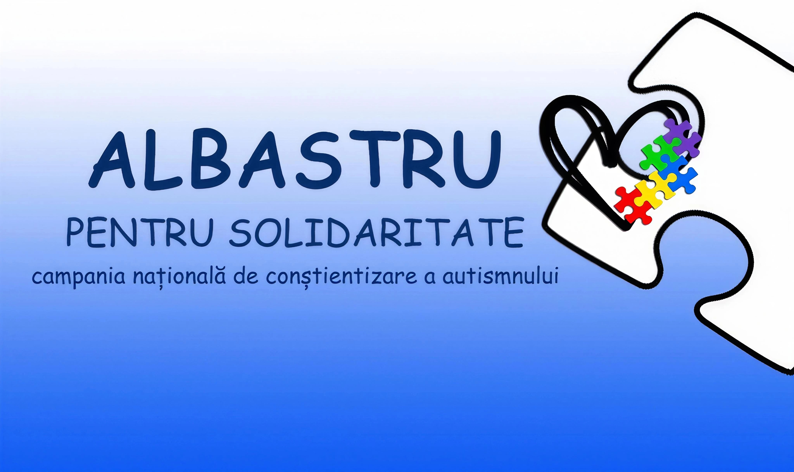

Materiale educaționale ale campaniei „Albastru pentru Solidaritate"
Platformă online dedicată persoanelor cu dizabilități și celor care le sprijină — părinți, îngrijitori, cadre didactice și specialiști. Oferă informații, resurse și comunitate pentru toate categoriile implicate.
Recomandări de filme și cărți despre tulburările de spectru autist, utile pentru elevi, părinți și cadre didactice.
Documentul nu poate fi afișat pe dispozitive mobile.
📥 Descarcă lista (PDF)Dacă documentul nu se afișează, deschide-l într-un tab nou sau descarcă-l.
Mărturisiri ale părinților, specialiștilor și persoanelor implicate în viața copiilor cu TSA.
9 mărturisiri audio din comunitatea noastră
Mărturisire 1
Mărturisire 2
Mărturisire 3
Mărturisire 4
Mărturisire 5
Mărturisire 6
Mărturisire 7
Mărturisire 8
Mărturisire 9
Scenariile de activitate pentru elevi, diferențiate pe cicluri de învățământ. Descărcați varianta corespunzătoare clasei dumneavoastră.
Material informativ dedicat copiilor, pentru a înțelege mai ușor ce este autismul și cum putem fi prieteni buni cu colegii noștri cu TSA.
Scenariul activității de informare și reflecție adaptat pentru ciclul primar (clasele I–IV).
Scenariul activității de informare și reflecție adaptat pentru ciclul gimnazial (clasele V–VIII).
Scenariul activității de informare și reflecție adaptat pentru ciclul liceal (clasele IX–XII).
Afișul oficial al campaniei naționale de conștientizare a autismului, Ediția a XIII-a, 2026. Poate fi tipărit și afișat în școli, instituții și spații publice.

{kind=link}